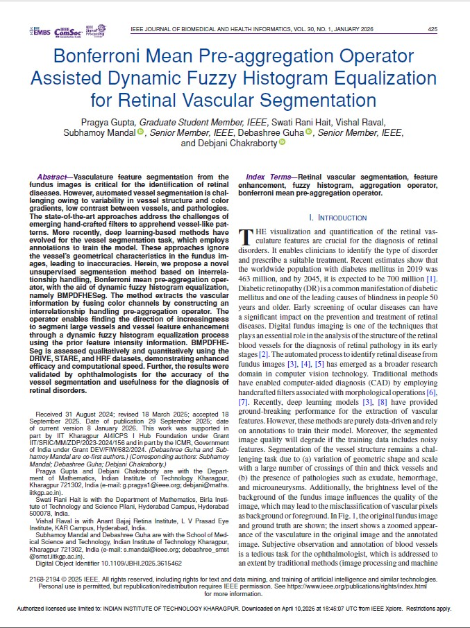
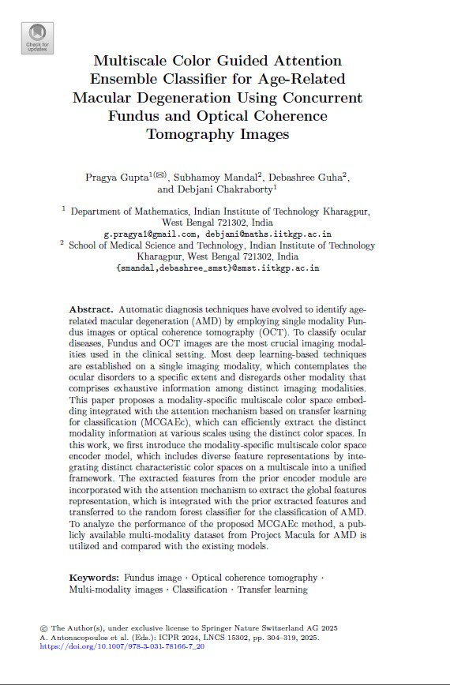

2026

Ranking Feature Importance Objectives for Explainable Classification
IEEE Access, Vol. 14, pp. 21137–21147, 2026
Recent studies on explainable machine learning models often analyse feature importance after training, but this results in a model that does not capture feature dependencies and requires extra computational resources for explainability. We propose a method for training a supervised learning model through multi-objective optimisation that considers accuracy and feature importance in a unified framework. This method provides an explainable training procedure that consistently minimises the model’s loss and maximises individual feature importance objectives, improving classification decision-making. We explore interpretable model training using many-objective and bi-objective optimisation formulations. Choosing an interpretable framework from these pathways is challenging, so we propose outranking them by constructing a credibility index based on performance metrics. Our experiments on the UCI repository and medical image datasets show the benefits of capturing feature importance early, ensuring intrinsic explainability.
PDF
10.1109/ACCESS.2026.3657343
https://github.com/PS297/MoEC.git
@ARTICLE{11363191,
author={Gupta, Pragya and Mondal, Sanchita and Aishwaryaprajna and Guha, Debashree and Chakraborty, Debjani},
journal={IEEE Access},
title={Ranking Feature Importance Objectives for Explainable Classification},
year={2026},
volume={14},
number={},
pages={21137-21147},
keywords={Training;Optimization;Indexes;Computational modeling;Mathematical models;Accuracy;Predictive models;Performance metrics;Feature extraction;Analytical models;Multi-criteria decision making;explainability;feature importance;Shapley value;outranking;classification},
doi={10.1109/ACCESS.2026.3657343}}
2025

Feature-Importance Aware Deep Neural Network Model for Explainable Recommender Systems
L. Mart´ınez et al. Intelligent Data Engineering and
Automated Learning – IDEAL 2025. IDEAL 2025. Lecture Notes in Computer Science, vol 16239. Springer,
Cham.
An interpretable decision-making process is vital for developing recommender systems. It should identify key items and relevant information to improve the recommendations. Deep learning models have shown promising performance, but simultaneously achieving explainability and efficiency is challenging. Existing explainable recommender systems interpret feature importance after training, which may not be able to determine crucial feature importance for enhancing performance. Additionally, the model’s learning paradigm depends on a single-objective function that ignores the captured information of user-item interaction. This study aims to develop a feature importance aware deep neural network model for explainable recommender systems, which facilitates improved predictive performance by considering the feature importance within the training procedure and generates a recommendation list based on the user’s preference. The proposed method minimizes the combination of model losses and introduces a penalty term that specifically targets and diminishes the detrimental impact of a particular feature on the solution’s efficacy. This strategy ensures the determination of the optimal solution by satisfying the explainable conditions imposed during the training framework. Extensive experiments on publicly accessible FilmTrust and MovieLens-100K datasets show notable recommendation performance.
PDF
Slides
Poster
@inproceedings{gupta2025feature,
title={Feature-Importance Aware Deep Neural Network Model for Explainable Recommender Systems},
author={Gupta, Pragya and Aishwaryaprajna and Guha, Debashree and Chakraborty, Debjani},
booktitle={International Conference on Intelligent Data Engineering and Automated Learning},
pages={109--120},
year={2025},
organization={Springer}
}

Bonferroni Mean Pre-aggregation Operator Assisted Dynamic Fuzzy Histogram Equalization for Retinal Vascular Segmentation
arXiv IEEE Journal of Biomedical and Health Informatics, vol. 30, no. 1, pp. 425-435, Jan. 2026
Vasculature feature segmentation from the fundus images is critical for the identification of retinal diseases. However, automated vessel segmentation is challenging owing to variability in vessel structure and color gradients, low contrast between vessels, and pathologies. The state-of-the-art approaches address the challenges of emerging hand-crafted filters to apprehend vessel-like patterns. More recently, deep learning-based methods have evolved for the vessel segmentation task, which employs annotations to train the model. These approaches ignore the vessel’s geometrical characteristics in the fundus images, leading to inaccuracies. Herein, we propose a novel unsupervised segmentation method based on interrelationship handling, Bonferroni mean pre-aggregation operator, with the aid of dynamic fuzzy histogram equalization, namely BMPDFHESeg. The method extracts the vascular information by fusing color channels by constructing an interrelationship handling pre-aggregation operator. The operator enables finding the direction of increasingness to segment large vessels and vessel feature enhancement through a dynamic fuzzy histogram equalization process using the prior feature intensity information. BMPDFHESeg is assessed qualitatively and quantitatively using the DRIVE, STARE, and HRF datasets, demonstrating enhanced efficacy and computational speed. Further, the results were validated by ophthalmologists for the accuracy of the vessel segmentation and usefulness for the diagnosis of retinal disorders.
2024

Multiscale Color Guided Attention Ensemble Classifier for Age-Related Macular Degeneration Using Concurrent Fundus and Optical Coherence Tomography Images
In: Antonacopoulos, A., Chaudhuri, S., Chellappa, R., Liu, CL., Bhattacharya, S., Pal, U. (eds) Pattern Recognition. ICPR 2024. Lecture Notes in Computer Science, vol 15302. Springer, Cham. https://doi.org/10.1007/978-3-031-78166-7_20
Automatic diagnosis techniques have evolved to identify age-related macular degeneration (AMD) by employing single modality Fundus images or optical coherence tomography (OCT). To classify ocular diseases, Fundus and OCT images are the most crucial imaging modalities used in the clinical setting. Most deep learning-based techniques are established on a single imaging modality, which contemplates the ocular disorders to a specific extent and disregards other modality that comprises exhaustive information among distinct imaging modalities. This paper proposes a modality-specific multiscale color space embedding integrated with the attention mechanism based on transfer learning for classification (MCGAEc), which can efficiently extract the distinct modality information at various scales using the distinct color spaces. In this work, we first introduce the modality-specific multiscale color space encoder model, which includes diverse feature representations by integrating distinct characteristic color spaces on a multiscale into a unified framework. The extracted features from the prior encoder module are incorporated with the attention mechanism to extract the global features representation, which is integrated with the prior extracted features and transferred to the random forest classifier for the classification of AMD. To analyze the performance of the proposed MCGAEc method, a publicly available multi-modality dataset from Project Macula for AMD is utilized and compared with the existing models.
PDF
10.1007/978-3-031-78166-7_20
@inproceedings{gupta2024multiscale,
title={Multiscale Color Guided Attention Ensemble Classifier for Age-Related Macular Degeneration Using Concurrent Fundus and Optical Coherence Tomography Images},
author={Gupta, Pragya and Mandal, Subhamoy and Guha, Debashree and Chakraborty, Debjani},
booktitle={International Conference on Pattern Recognition},
pages={304--319},
year={2024},
organization={Springer}
}
💡 How to add paper thumbnails: Take a screenshot of your paper's first page, save it as paper1.jpg, upload it to GitHub alongside your HTML files, then replace the placeholder <div> with <img src="paper1.jpg" alt="Paper title">.